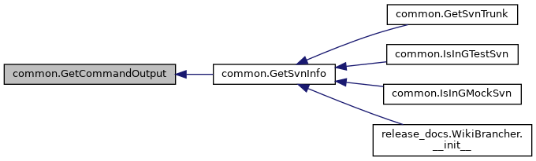
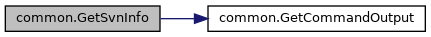
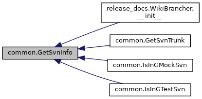
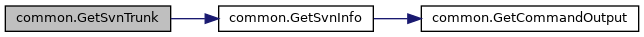
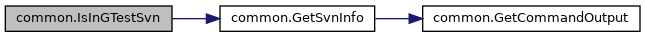

Functions | |
| def | GetCommandOutput (command) |
| def | GetSvnInfo () |
| def | GetSvnTrunk () |
| def | IsInGTestSvn () |
| def | IsInGMockSvn () |
Variables | |
| string | __author__ = 'wan@google.com (Zhanyong Wan)' |
| _SVN_INFO_URL_RE = re.compile(r'^URL: https://(\w+)\.googlecode\.com/svn(.*)') | |
Function Documentation
◆ GetCommandOutput()
| def common.GetCommandOutput | ( | command | ) |
Runs the shell command and returns its stdout as a list of lines.
Definition at line 46 of file common.py.
Referenced by GetSvnInfo().
Here is the caller graph for this function:

◆ GetSvnInfo()
| def common.GetSvnInfo | ( | ) |
Returns the project name and the current SVN workspace's root path.
Definition at line 55 of file common.py.
References GetCommandOutput().
Referenced by release_docs.WikiBrancher.__init__(), GetSvnTrunk(), IsInGMockSvn(), and IsInGTestSvn().
Here is the call graph for this function:

Here is the caller graph for this function:

◆ GetSvnTrunk()
| def common.GetSvnTrunk | ( | ) |
Returns the current SVN workspace's trunk root path.
Definition at line 69 of file common.py.
References GetSvnInfo().
Here is the call graph for this function:

◆ IsInGMockSvn()
| def common.IsInGMockSvn | ( | ) |
Definition at line 81 of file common.py.
References GetSvnInfo().
◆ IsInGTestSvn()
| def common.IsInGTestSvn | ( | ) |
Definition at line 76 of file common.py.
References GetSvnInfo().
Here is the call graph for this function:

Variable Documentation
◆ __author__
|
private |
◆ _SVN_INFO_URL_RE
Generated by
 1.8.13
1.8.13